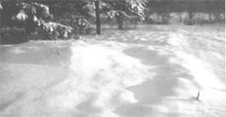

SEASONS OF THE GARDEN
The answer to that eternal question: Should I mulch my perennial fruits?
BY NOW, WITH ANY LUCK, YOUR RHODODENDRONS and azaleas are safely nestled under a layer of pine needles (or wood chips or sawdust or whatever), your roses are snug under their protective cones and are now mere drifts under a blanket of snow, and your bulbs have been tucked away before the first hard frost.
Now is the time to turn your attention to perennial fruits. There has been much controversy and confusion over the cold-weather mulching of these plants. Some say that a garden should be left naked and exposed for the winter. Authors John and Helen Philbrick have written, "Mulch should not be left on over the winter because it prevents the beneficial action of the frost in the earth. Moisture should not be hindered from 'coming and going' during seasons of snow and ice. If protective mulch is in such a condition that it will break down during the winter and become part of the topsoil, it may be left. But the home gardener should study this subject carefully and be sure he knows exactly what he is doing and why he is doing it."
I have made a study of this--a cursory one, at least. I asked the question, "Why does Mother Nature arrange to have her trees drop their leaves, and then see to it that a heavy blanket of snow insulates the ground even more? Is winter mulching, then, a bad thing?" I have concluded that your garden, particularly your perennials, should have winter mulch. But there is no rush to put it there.
Vermonters laugh unsympathetically at "down-country" people who bundle up under many layers of winter clothing in a futile effort to keep the cold out and keep their own body warmth in.
Winter mulch acts in the same way, except that it keeps winter soil frozen--even during thaws. Winter moisture and frost should be allowed to penetrate the soil before you lay down a heavy winter mulch. Then, if the mulch keeps the frost in, the plants cannot be "heaved" out of the ground when the soil expands and contracts on alternately freezing and thawing days.
Winter mulch protects perennial foliage from drying winds and too-bright winter sunshine. It prevents the absorption of heat in the spring and won't allow a thing to grow until after the last killing frost, when it is finally removed.
Last point of debate: How much winter mulch is enough? I suppose it's possible to smother plants under too much winter mulch. One approach to the problem might be to find out the average frost depth in your area from your local bureau of the National Weather Service. Then roughly estimate how deep your plants' roots are. Once you know this; you might find that Dr. D.E. Pfeiffer provides a clue. He says, "Winter mulch does the same thing that snow does: It insulates the soil to the same depth as the height of the mulch. If there is a three-foot snowfall, the effect of the snow reaches down to a depth of three feet. A mulch acts in the same way." This doesn't mean that you have to mulch to a level equivalent to the bottom of the frost level. That would mean as much as four feet of mulch in Vermont! It only means that you should mulch to a height that is a little greater than your perennial plants' roots are deep--that is, if the frost level where you live goes below that point.
All that said, here are some suggestions for mulching some of the most commonly raised backyard fruits.
How to ... with strawberries. Winter mulching is essential to successful strawberry growing. It not only prevents heaving, which breaks roots, but protects the vulnerable crown of each plant, which is in real danger in temperatures below 10°F. The plants should be protected by several inches of mulch whenever temperatures stay below 20°F for any extended period of time. In this part of the country, that would be somewhere between Thanksgiving and the middle of December.
Don't mulch your strawberry plants before that-early mulching can do more harm than not mulching at all. Covering your plants too soon will block sunlight from the leaves and halt photosynthesis. This will prevent the plants from producing and storing enough carbohydrates to get through the winter.
Straw is generally the mulch of choice for winter protection. If you use one of the organic mulches, uncover the plants in late spring, when the new growth is about two inches long. Again, don't be overanxious. An early spring frost can nip off uncovered strawberry flowers, and you'll end up with fewer berries. As you remove the mulch, put half of it in the pathways between rows and leave the other half for the plants to grow through.
How to ... with raspberries and blackberries. Although mulching is not necessary for either, it will improve yields and lessen cold injury. It's important, however, not to over-mulch. New growth may not be able to push through a thick layer.
You can mulch raspberries and blackberries almost immediately after planting. I use chopped hay or leaves or a combination of the two. Sawdust, wood chips, shavings, dried chopped cornstalks, and poultry litter can also be tried. Apply three or four inches to the row or over the entire soil surface. Be alert for nitrogen deficiencies.
How to ... with blueberries. Mulching blueberries can be a tricky thing. Some argue that they should not be mulched at all unless there is good soil drainage. Overmulching can make blueberries more susceptible to disease. Other authorities admit that blueberries are apt to ripen later if they are mulched, but claim that higher yield is the end result.
Sawdust and chopped cornstalks are excellent mulches for blueberries. This resurrects the old myth about sawdust mulch "souring" the soil. Sawdust actually tends to influence the soil pH very little in most cases. But even if it were to make the soil more acidic, this would not hurt the blueberries. They seem to do best in a soil with a pH of 4.5 to 5.0, so they should never need lime. This means they can stand a permanent mulch of anywhere from four to six inches of pine needles, peat moss, oak leaves, beech leaves, or any other mulch that releases acid seepage. Black plastic, neither sweet nor sour, also works well on blueberries.
A word on ... mulching vegetables. Don't forget those vegetables that rely on a hearty winter mulch to make it through the cold months.
How to ... with asparagus. If you're just starting a new asparagus bed, mulching probably isn't necessary at all until the second spring-but if you live in a cold place like Vermont or Minnesota, you'll want to mulch for winter protection even in the first year. Hay, leaves, straw, old manure, and compost are just a few mulches that are excellent for winter protection of asparagus.
As you know, once a bed has established itself it will continue to produce asparagus for many years. In the spring, there is no need to remove winter mulch. The tips will come up through the mulch whenever they are ready. Eight inches of hay is not too much for asparagus. Its primary function is weed control, but there may be other fringe benefits.
How to ... with carrots. Have you tried leaving your carrots in the ground during the early winter months? They can be kept there, covered with a heavy mulch of some kind to prevent freezing and thawing damage. Once dug up, these winter carrots won't keep long, but they're certainly preferable to the frozen or canned stuff. How to ... with kale. Kale is an incredibly hardy vegetable. It can be grown nearly any time of year. A fall or winter crop may be left in the field, covered lightly with something like hay, pea or cranberry vines, or straw. Later in the winter remove the snow (one of the mulches kale seems to like best, by the way) and cut the leaves as you want them. Kale will sometimes keep this way all winter, if it doesn't get smothered by ice after a thaw.
Editor's note: Stu Campbell is the author of The Mulch Book: A Complete Guide for Gardeners, from which this article is adapted. It's available from MOTHER's BOOKSHELF (see p.49) for $8.95 plus shipping and handling.
|
 Photograph By David Cavagnaro Cold-weather mulching protects perennials in much the same way as a heavy blanket of snow insulates the ground in winter. |
|
|